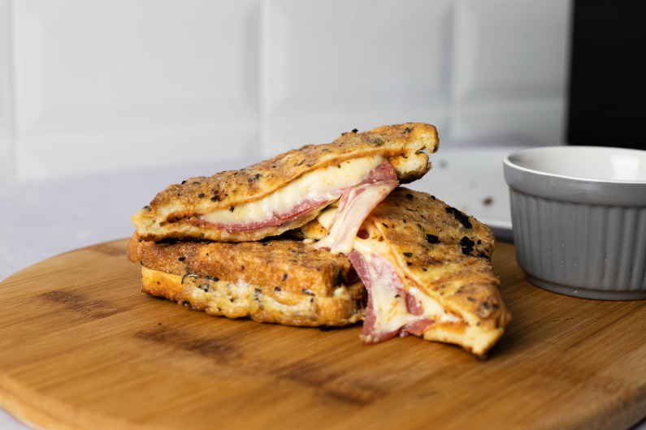

Grilled Cheese Sandwich!

Grilled Cheese Sandwich: The grilled cheese sandwich has a savory and salty flavor, thanks to the cheese and butter.
It is a comfort food that is quick and easy to make.
It is also a good source of protein and calcium from the cheese.
Ingredients
- 2 slices of bread
- 2 slices of cheese (any variety)
- 2 tablespoons butter
Steps
- Butter one side of each slice of bread.
- Place one slice, butter side down, in a pan over medium heat.
- Top with cheese and the other slice of bread, butter side up.
- Cook until the bottom slice is golden brown, then carefully flip the sandwich and cook until the other side is also golden brown and the cheese is melted.
- Serve hot and enjoy!